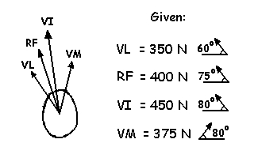
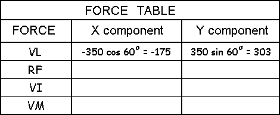

Rectangular Components of Vectors
Example of Quadriceps Muscle Force:
Find the resultant quadriceps muscle force given the individual muscle forces of vastus lateralis (VL), rectus femoris (RF), vastus intermedius (VI) and vastus medialis (VM).
Solution
Starting with VL and using trigonometry, we know that the hypotenuse is 350 N. The horizontal or X-component is the adjacent side to the 60 degree angle and is pointing to the left (negative). The vertical or Y-component is the opposite side to the 60 degree angle and is positive.
